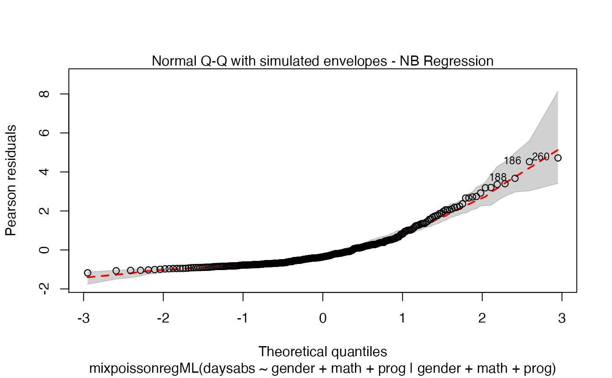

Building and customizing base-R diagnostic plots with the mixpoissonreg package
Alexandre B. Simas
2021-02-27
Source:vignettes/plots-mixpoissonreg.Rmd
plots-mixpoissonreg.Rmdbase-R diagnostic plots
Choosing plots
The first, and maybe the easiest, customizable option is the choice of plots to be displayed. The current available plots are (together with their corresponding numbers):
- Residuals vs Obs. number
- Normal Q-Q
- Cook’s distance
- Generalized Cook’s distance
- Cook’s dist vs Generalized Cook’s dist
- Response vs Fitted means
These plots can be chosen by giving a list of the numbers of the wanted plots in the which argument.
If the argument which is not provided, then, by default, the plots 1, 2, 5 and 6 will be displayed:
library(mixpoissonreg)
fit <- mixpoissonreg(daysabs ~ gender + math + prog | gender + math + prog,
data = Attendance)
plot(fit)


If we want only a single plot, we simply indicate its number. For instance, if we only want the plot of Cook’s distances, we simply set which = 3:
plot(fit, which = 3)If we want more than one, we provide a list with the desired plots. Suppose we want the global influence-related plots, that is, plots 3, 4 and 5. Then, we set which = c(3,4,5):


Titles and subtitles
In this section we will describe how to customize titles and subtitles.
First of all, by default, the type of the fitted model (that is, if it is a Negative-Binomial or Poisson Inverse Gaussian regression) is included in each caption. See, for instance, the plot below:
plot(fit, which = 1)
To remove the model type, simply set include.modeltype to FALSE:
plot(fit, which = 1, include.modeltype = FALSE)
One should notice that in both plots, the type of the residual was only included in the y-axis label. To also include the type of the residual at the caption, simply set include.residualtype to TRUE:
plot(fit, which = 1, include.residualtype = TRUE)One can define one common title to all plots by setting the main parameter to such common title. For instance,
plot(fit, main = "Mixed Poisson Regression")


The main parameter also works to provide an additional title to a single plot, by also setting the which parameter to the desired plot:
plot(fit, which = 1, main = "Mixed Poisson Regression")
The captions (displayed above the plot) can be altered by setting the caption parameter to a list containing the wanted captions. One drawback is that we have to provide a list containing the captions we want in the positions of the plots we want. For example, if we only have one plot, the following example will change the caption:
plot(fit, which = 1, caption = "My caption")
However, it will not work for the remaining plots, for instance:
plot(fit, which = 2, caption = "My caption")A simple way to circumvent the above situation is to create an empty list and set the titles at the positions we want:
my_captions <- rep("",6)
my_captions[2] <- "My caption 2"
my_captions[4] <- "My caption 4"
plot(fit, which = c(2,4), caption = my_captions)Notice that, since we did not change the include.modeltype argument, the model type are added in the new captions.
We can change the size of the captions with the argument cex.caption. The default size is 1. So, for instance,
my_captions <- rep("",6)
my_captions[2] <- "My caption 2"
my_captions[4] <- "My caption 4"
plot(fit, which = c(2,4), caption = my_captions, cex.caption = 1.5)
We can also change the subcaption. By default, the subcaption is a simplified version of the call to the mixpoissonreg function that was used to fit the model.
We must have some caution on describing the subcaption. If each plot is given in one window (without using the par(...) command, for example), then the subcaption is the caption below the x-axis label. However, if multiple plots are given at once, and there is space on the upper part of the plot, then the subcaption is a general caption for all the plots.
We will illustrate the above description with examples to make it clearer.
The subcaption can be altered by setting the sub.caption parameter to the desired caption.
Thus, we begin by providing the plots without the usage of par function.
plot(fit, which = 1, sub.caption = "My subcaption")
Notice that the subcaption is below the x-axis label. The same happens even if we there is more than one plot and we do not use the par function:
plot(fit, sub.caption = "My subcaption")


Now, notice the position of the subcaption when we gather multiple plots using the par function (while we provide room the subcaption by using the oma argument):
par(mfrow = c(2, 2), oma = c(0, 0, 2, 0), mar=par("mar")/2)
plot(fit, sub.caption = "My subcaption")In the previous case, that is, the case in which we have the subcaption above all plots, one can change the size of the subcaption using the argument cex.oma.main.
For instance,
Colors, sizes, point types and line types
In this section we show how to customize colors, sizes and types of lines and points.
First of all, notice that several graphical parameters may be passed as additional parameters through the three dots ellipsis. For instance, we may pass the argument pch from plot.default to change the type of points:
plot(fit, which = 1, pch = 2)Another example is the main color. Let us set a main title with the main argument, and change its color with the col.main argument:
plot(fit, which = 1, main = "Plot 1", col.main = "red")We can also change the main size, by using the cex.main argument:
plot(fit, which = 1, main = "Plot 1", col.main = "red", cex.main = 2)Similarly, we can change the x and y label’s colors by using the col.lab argument:
plot(fit, which = 1, col.lab = "red")As well as change their sizes by using the cex.lab argument:
plot(fit, which = 1, cex.lab = 2)We can change the sub.caption color by using the col.sub argument:
plot(fit, which = 1, col.sub = "red")and change its size by using the cex.sub argument:
plot(fit, which = 1, cex.sub = 2)Now, we deal with specific arguments of the plot.mixpoissonreg. We begin by dealing with the point colors. To change the colors of the points, we use the col.points argument:
plot(fit, which = 1, col.points = "red")To change the point sizes, we use the argument cex.points:
plot(fit, which = 1, cex.points = 2)We will now deal with point labels. First of all, we may change the color of the point labels by using the argument col.id:
plot(fit, which = 1, col.id = "red")We can change the point labels’ sizes by using the cex.id argument:
plot(fit, which = 1, cex.id = 2)Let us now customize the lines in the Cook’s distance plots, namely plots 3 and 4. By default, the line type for Cook’s distance plots is 'h':


Let us change the line type for Cook’s distance plots to points and change the point types to crosses:
Let us now change the colors of titles and captions. To change the caption’s color, we use the col.caption argument:
plot(fit, which = 1:2, col.caption = "red")Finally, let us customize the quantile-quantile plots with and without simulated envelopes, namely, plot 2. The first customization is to remove the diagonal Q-Q line in the quantile-quantile plot without simulated envelopes:
plot(fit, which = 2, qqline = FALSE)We can change the qqline color by using the col.qqline argument:
plot(fit, which = 2, col.qqline = "red")Finally, let us consider a fitting with simulated envelopes:
fit_env <- mixpoissonregML(daysabs ~ gender + math + prog | gender +
math + prog, envelope = 10, data = Attendance)
plot(fit_env, which = 2)Let us first change the color of the lines of the upper and lower bands of the simulated envelopes:
plot(fit_env, which = 2, line_col_env = "red")Let us now change the color of the median curve of the simulated envelopes:
plot(fit_env, which = 2, line_col_median = "red")
Let us also change the fill color of the simulated envelopes:
plot(fit_env, which = 2, line_col_env = "red", fill_col_env = "red")Let us change the color transparency. To such an end we use the argument fill_alpha_env:
plot(fit_env, which = 2, line_col_env = "red", fill_col_env = "red",
fill_alpha_env = 0.3)Points to be identified
By default the plot.mixpoissonreg function always identifies the 3 “most extreme” points. We can change it so that it does not identify any points by setting the argument id.n to 0:
plot(fit, id.n = 0)We can also increase the number of identified points. For instance:
plot(fit, id.n = 5)
Finally, we can change the labels of the identified points with the argument labels.id. For instance, we may want to have the value of the prog covariate instead:
plot(fit, labels.id = model.frame(fit)$prog)